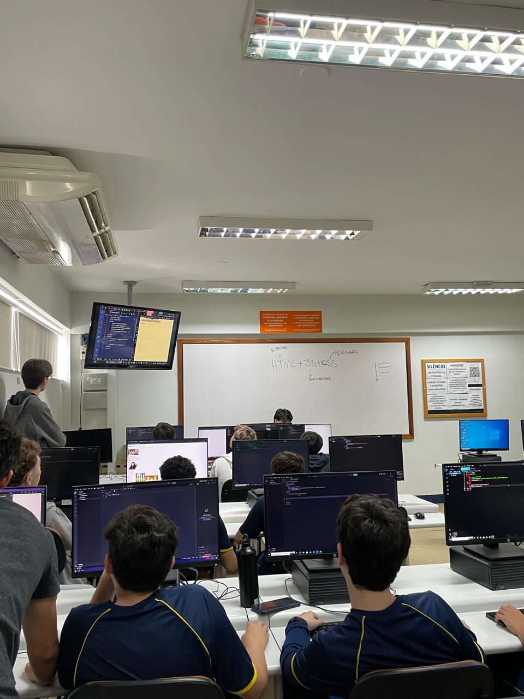

Relatório – 15ª Aula
Data: 15/06/2026
Turma: 8º e 9º ano
Instrutor:Kawan
Relatório – css básico
Na aula de hoje entramos no conteúdo de CSS, onde explicamos toda a parte básica da matéria para os alunos. Mostramos como linkar as páginas de HTML e CSS, como colocar fontes externas usando o Google Fonts e a estrutura correta dos comandos, começando pelo atributo, função e valor. Para deixar a explicação mais clara, fizemos alguns exemplos práticos no quadro alterando o h1, o parágrafo e a tag de link, tirando as decorações padrão e mudando as cores. Durante a atividade, o instrutor Kawan deixou um tempo livre para que os alunos pudessem aplicar o que aprenderam com mais calma no computador.
No geral a aula foi bem tranquila e produtiva, já que os alunos conseguiram acompanhar bem o passo a passo e não tivemos grandes dificuldades com o conteúdo novo. Foi bem legal ver que eles assimilaram rápido a lógica de estilização das páginas, e terminamos o dia com a sensação de que a base de CSS foi muito bem fixada por todos.
